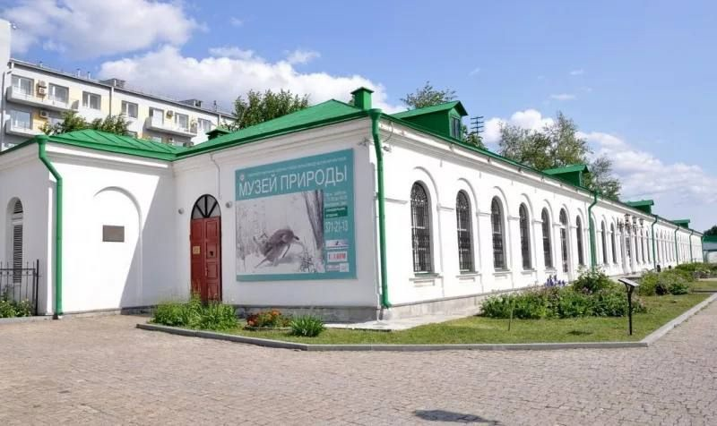
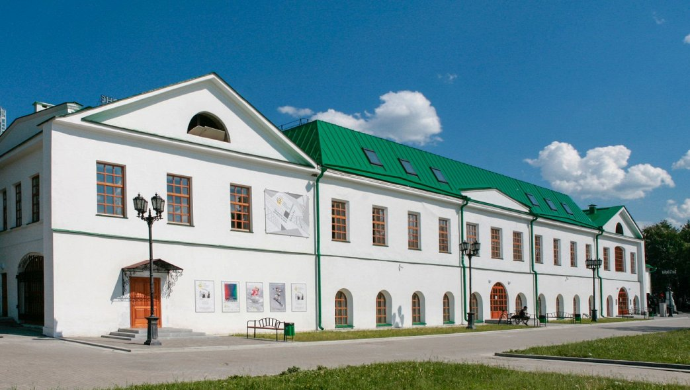

<!DOCTYPE html>
<html lang="ru">
<head>
    <meta charset="UTF-8">
    <meta name="viewport" content="width=device-width, initial-scale=1.0">
    <title>Интерактивная карта Екатеринбурга с музеями</title>
    <style>
        #map {
            width: 100%;
            height: 100vh; /* Высота карты на весь экран */
        }
    </style>
    <script src="https://api-maps.yandex.ru/2.1/?apikey=d3e575a2-21f0-4c40-9084-e62496f8cd32&lang=ru_RU" type="text/javascript"></script>
</head>
<body>
    <div id="map"></div>

    <script>
        // Инициализация карты
        ymaps.ready(init);

        function init() {
            // Создание карты
            var myMap = new ymaps.Map("map", {
                center: [56.838011, 60.597464], // Координаты Екатеринбурга
                zoom: 13 // Уровень масштабирования
            });

            // Создание массива объектов с данными о музеях
            var museumData = [
                {
                    type: "Feature",
                    id: 0,
                    geometry: {
                        type: "Point",
                        coordinates: [56.837487, 60.605657]
                    },
                    properties: {
                        hintContent: '<div style="text-align: center;"><strong>Музей природы Урала</strong><br></div>',
                        balloonContent: 'Музей природы Урала'
                    },
                    options: {
                        iconLayout: 'default#image',
                        iconImageHref: 'marker.png', // Указываем путь к изображению маркера
                        iconImageSize: [30, 42], // Размеры изображения маркера
                        iconImageOffset: [-15, -42] // Смещение изображения маркера
                    }
                },
                {
                    type: "Feature",
                    id: 1,
                    geometry: {
                        type: "Point",
                        coordinates: [56.836255, 60.605714]
                    },
                    properties: {
                        hintContent: '<div style="text-align: center;"><strong>Музей архитектуры и дизайна</strong><br></div>',
                        balloonContent: 'Музей архитектуры и дизайна'
                    },
                    options: {
                        iconLayout: 'default#image',
                        iconImageHref: 'marker.png', // Указываем путь к изображению маркера
                        iconImageSize: [30, 42], // Размеры изображения маркера
                        iconImageOffset: [-15, -42] // Смещение изображения маркера
                    }
                },
                {
                    type: "Feature",
                    id: 2,
                    geometry: {
                        type: "Point",
                        coordinates: [56.835295, 60.603326]
                    },
                    properties: {
                        hintContent: 'Екатеринбургский музей изобразительных искусств',
                        balloonContent: 'Екатеринбургский музей изобразительных искусств'
                    },
                    options: {
                        iconLayout: 'default#image',
                        iconImageHref: 'marker.png', // Указываем путь к изображению маркера
                        iconImageSize: [30, 42], // Размеры изображения маркера
                        iconImageOffset: [-15, -42] // Смещение изображения маркера
                    }
                }
            ];

            // Создание объектного менеджера с включенной кластеризацией
            var objectManager = new ymaps.ObjectManager({
                clusterize: true,
                gridSize: 32,
                clusterDisableClickZoom: false // Разрешить увеличение карты при клике на кластер
            });

            // Добавление данных о музеях в объектный менеджер
            objectManager.add({
                type: "FeatureCollection",
                features: museumData
            });

            // Добавление объектного менеджера на карту
            myMap.geoObjects.add(objectManager);
        }
    </script>
</body>
</html>